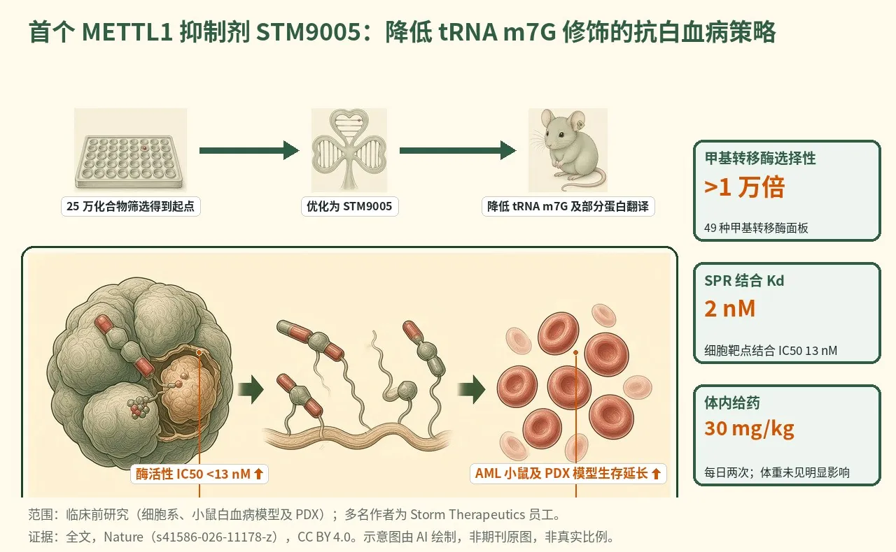

小分子抑制剂STM9005阻断METTL1 tRNA甲基化
STM9005是一种靶向METTL1催化位点的小分子抑制剂，由25万化合物高通量筛选起点STM4529（IC50约15 μM）优化而来：重组酶IC50<13 nM，SPR测得Kd 2 nM，对49种甲基转移酶选择性>1万倍。它降低部分tRNA的m7G修饰，使CDK4、KDM1A、MYC等蛋白翻译下降；在黑色素瘤、胰腺癌、肺腺癌小鼠模型中抑制肿瘤生长，并延长AML小鼠及AML PDX模型生存期。目前全部为临床前数据。

- 25万化合物高通量筛选获得起点STM4529
- 优化得到小分子STM9005，选择性>1万倍
- 降低部分tRNA m7G，CDK4等翻译下降
- AML小鼠及PDX模型中延长生存
示意图概括了 STM9005 占据 METTL1 的 SAM 结合口袋、阻断 tRNA 第 46 位 m7G 修饰，进而降低依赖这些 tRNA 的致癌蛋白翻译并抑制肿瘤生长的过程。
研究背景与待解问题
m7G 是最常见的 tRNA 修饰之一，主要由 METTL1–WDR4 复合物沉积在 tRNA 第 46 位，其中 METTL1 是催化亚基。METTL1 上调与急性髓系白血病（AML）、黑色素瘤、胶质母细胞瘤、肝癌和肺癌等恶性肿瘤的发生和维持有关。
表观转录组药物研发此前主要集中在 mRNA 的 m6A 修饰及其调控酶。已报道的早期 METTL1 原型抑制剂效力和选择性有限，不足以回答“药理学抑制 tRNA 修饰酶能否治疗肿瘤”这一问题。本文要解决的就是：能否得到足够强效、选择性高的小分子工具，并在体内验证其抗肿瘤作用。
研究设计
研究团队对 250,000 个类药化合物进行高通量筛选，得到与 SAM 结构无关的起点 STM4529（IC50 约 15 μM）。SPR 显示其与 SAM 类似物 SAH 竞争结合，提示结合于催化位点。经过效力、选择性与吸收–分布–代谢–排泄性质的系统优化，得到小分子抑制剂 STM9005，并解析了 METTL1–STM9005 晶体结构（PDB 9RYL）。
细胞层面，作者在人白血病细胞系、原代小鼠 AML 及多种人/小鼠实体瘤细胞（皮肤、肺、胰腺、结直肠、食管、软组织来源）中测试增殖、分化与细胞周期，并用 METTL1 敲除、野生型与催化失活突变体（人 L160A/D164A）过表达、Arg-TCT tRNA 及 CDK4 过表达回补实验验证作用靶点。分子层面采用 mim-tRNA-seq、Northern blot、Ribo-seq 与 mRNA-seq。体内部分包括 B16F10 黑色素瘤（免疫健全小鼠）、Kras 驱动的 mPDAC1 胰腺癌与 A549 肺腺癌（免疫缺陷小鼠）皮下瘤模型，以及 MLL-AF9/Flt3-ITD 原代 AML 和患者来源 AML-491 PDX 模型。
核心结果
强效、选择性的 METTL1 小分子抑制剂
STM9005 抑制重组 METTL1 酶活性的 IC50<13 nM，SPR 测得 Kd 2 nM，细胞内靶点结合 IC50 13 nM。它对 METTL3/14、METTL16、NSUN2 等其他 RNA 甲基转移酶无影响，在 49 种 RNA、DNA 与蛋白甲基转移酶面板中对 METTL1–WDR4 的选择性大于 10,000 倍。晶体结构显示 STM9005 结合在 SAM 口袋，部分结构伸入此前未见的口袋，与 Tyr184、Phe159 形成相互作用；甲基朝向相反的非对映异构体 STM9001 活性低约 100 倍。
小鼠单次腹腔注射 10 或 30 mg/kg 后，血浆最高浓度分别为 13 与 56 μM，半衰期约 1 小时，12 小时时血浆浓度仍高于细胞 IC50。
细胞效应：增殖受抑、分化与细胞周期改变
STM9005 以剂量依赖方式抑制多种白血病和实体瘤细胞增殖，诱导 AML 细胞髓系分化，使实体瘤细胞 G0/G1 期比例升高、S 期减少，未见明显凋亡。对 METTL1 基因缺失不敏感的模型同样对 STM9005 不敏感；METTL1 敲除细胞再加药无额外效应，支持其作用依赖 METTL1。
分子机制：tRNA m7G 下降与致癌蛋白翻译减少
mim-tRNA-seq 显示，在 B16F10 与原代 AML 中，已知 m7G 修饰 tRNA 的 m7G46 信号特异性下降，部分 tRNA 表达量随之降低。CDK4、KDM1A 与 MYC 蛋白水平呈剂量依赖下降，而相应 mRNA 水平未降。过表达 Arg-TCT tRNA 或 CDK4 可部分挽救细胞活力；过表达野生型 METTL1 增加耐药，催化失活突变体则不能。Ribo-seq 显示依赖 m7G 修饰 tRNA 解码的密码子处 A 位核糖体占据增加。
体内药效与耐受性
30 mg/kg 每日 2 次给药后，B16F10、mPDAC1 与 A549 皮下瘤生长均显著受抑，肿瘤和肾脏 tRNA m7G 水平下降，B16F10 肿瘤中 MYC 下降、p53 上升。MLL-AF9/Flt3-ITD 原代 AML 模型（溶媒 5 只对 STM9005 7 只）与 AML-491 PDX 模型生存期均显著延长，PDX 骨髓 hCD45+ 细胞负荷降低。正常小鼠给药 12 天后 30 天评估，器官重量、骨髓造血及心肝肾脾组织学均未见差异。
机制解读
论文所证实的： STM9005 是结合 METTL1 催化（SAM）口袋的小分子抑制剂，可在细胞和小鼠体内降低 tRNA m7G 修饰；催化失活突变体回补、非对映异构体对照与 METTL1 敲除实验共同支持其抗增殖效应来自对 METTL1 催化活性的抑制。下游表现为依赖 m7G 修饰 tRNA 的密码子解码受阻，CDK4、KDM1A、MYC 等致癌蛋白翻译减少。
作者推测： MYC 过表达只能部分挽救表型，作者认为 STM9005 的抗肿瘤作用可能部分通过下调 MYC 及其通路实现。作者也指出体内仅观察到肿瘤生长抑制、未见消退，可能与给药周期较短有关，并提出未来与其他抗肿瘤药联用的方向。
局限与不确定
- 全部为临床前数据（细胞系、原代细胞与小鼠模型），人体药代、安全性与疗效未知。
- 动物实验每组 4–9 只，未预先计算样本量，未随机化，研究者未设盲。
- 体内只观察到肿瘤生长抑制，未见肿瘤消退；给药周期为 5–12 天，更长期给药的耐受性未评估。
- tRNA 修饰是广泛存在的基础过程，正常组织长期耐受性仍需更系统的毒理研究。
- 多名作者为 Storm Therapeutics 员工，化合物由该公司研发。
临床/产业意义
这项研究为“靶向 tRNA 修饰酶治疗肿瘤”提供了较完整的药理学概念验证：从高通量筛选、结构解析到多种体内模型，证明 METTL1 催化活性可以被小分子选择性抑制。对 RNA 修饰药物领域而言，它把目标从 m6A 通路扩展到 tRNA 甲基化；对 AML 等高度依赖 METTL1 的肿瘤，PDX 模型中的生存延长是进入临床前开发的重要依据。能否进入人体试验，还取决于后续 GLP 毒理和药代研究。